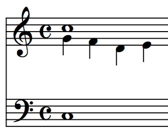

La nota cambiata se da cuando tenemos un doble floreo sobre la nota de llegada pero no es floreo de la nota de partida. Es en realidad un procedimiento que viene del contrapunto y que consiste, en una escala descendente, intercambiar el lugar de dos notas sucesivas.
Nota cambiata

Obra publicada con Licencia Creative Commons Reconocimiento Compartir igual 4.0